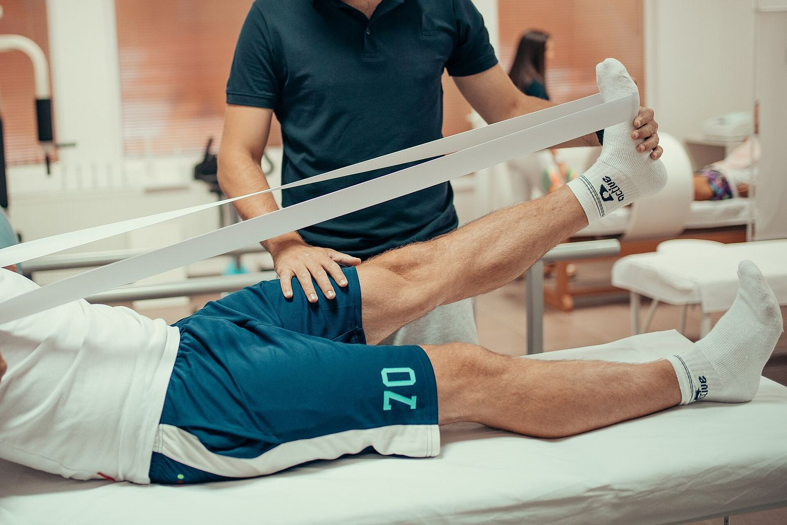
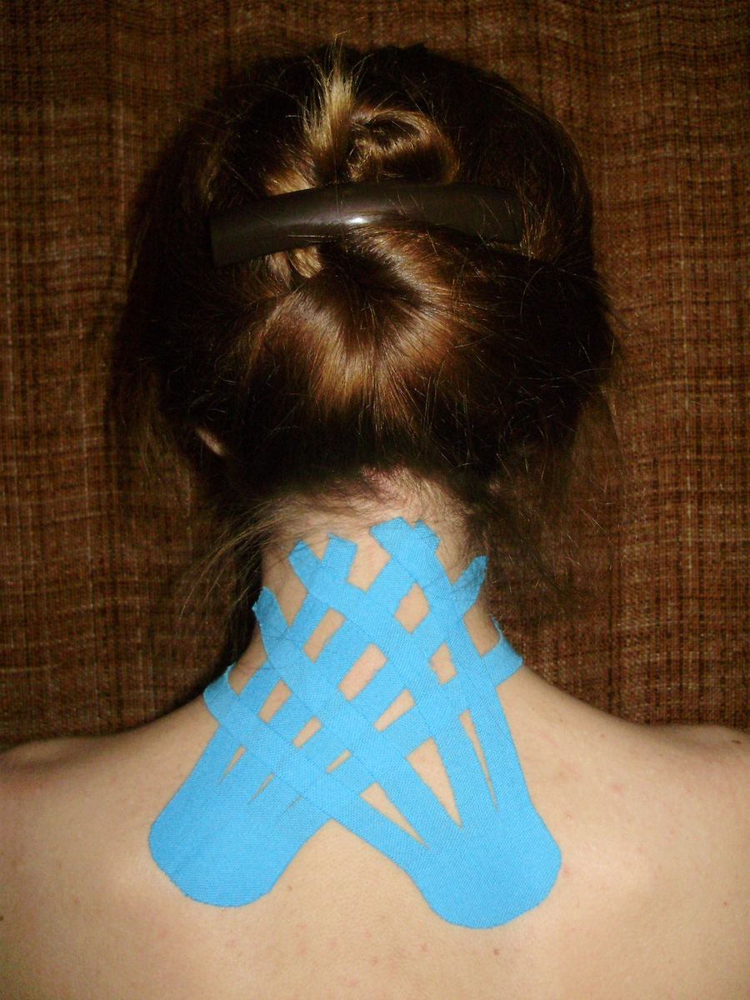
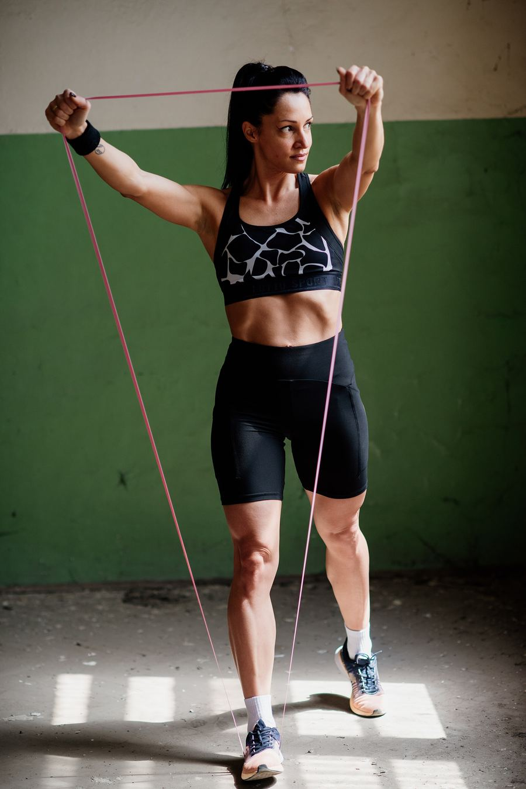
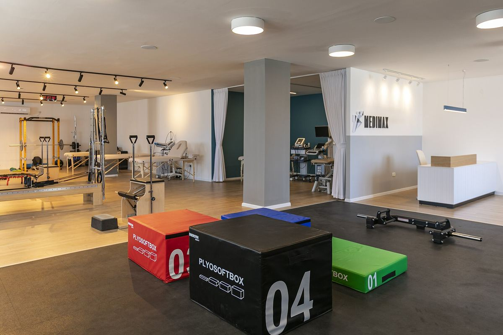
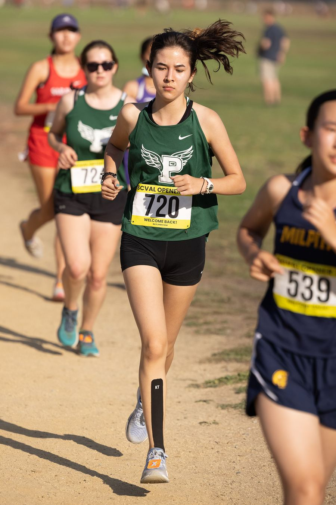
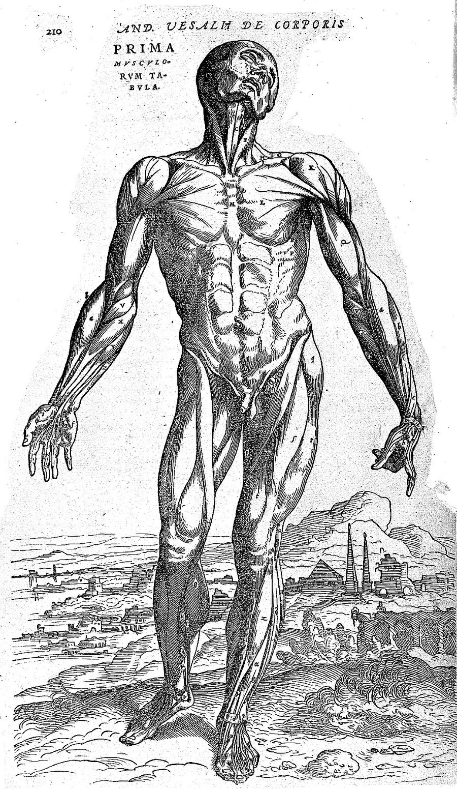

״הטיפול היה מקצועי, כנה (…) ונעים מאוד.״“The treatment was professional, honest (…) and very pleasant.”
עומר קורץ, בגוגלOmer Kurtz, on Google · translated from Hebrew
קונספט לדוגמה שנבנה עבור מכון דוד לפיזיותרפיה · זה אינו האתר הרשמי של העסקA sample concept built for David Physiotherapy Clinic · This is not the business’s official website
מכון דוד לפיזיותרפיה: טיפול ותרגול ברחוב הרב בר אילן 13, קריית מוצקין.David Physiotherapy Clinic: treatment and exercise at 13 HaRav Bar Ilan St, Kiryat Motzkin.





תמונות להמחשהIllustrative photos

אנדראס וסאליוס, De humani corporis fabricaAndreas Vesalius, De humani corporis fabrica
סמנו על הגוף, וההודעה למכון תיכתב לבד.Mark it on the body and the message to the clinic writes itself.
הודעה למכון דודMessage to David Physiotherapy
מה שמטופלים כתבו על המכון, במילים שלהם.What patients wrote about the clinic, in their own words.
״הטיפול היה מקצועי, כנה (…) ונעים מאוד.״“The treatment was professional, honest (…) and very pleasant.”
עומר קורץ, בגוגלOmer Kurtz, on Google · translated from Hebrew
ממוצע 5.0 מ-20 ביקורות בגוגלA 5.0 average from 20 Google reviews
ראשון עד שישי, מ-8:00 בבוקרSunday to Friday, from 8:00
״יש ציוד חדיש לטיפולים ותרגילים.״“There’s modern equipment for treatments and exercises.”
קרן יוסף, בגוגלKeren Yosef, on Google · translated from Hebrew
״היחס והעבודה מכל הלב של דוד הפיזיוטרפיסט ושל נטלי פקידת הקבלה.״“The attitude and wholehearted work of David the physiotherapist and of Natali at reception.”
יונה מוסקוביץ, בגוגלYona Moskovitz, on Google · translated from Hebrew
״עובד מול כל הביטוחים.״“Works with all the insurers.”
סיני גרבי, בגוגל · כדאי לוודא בטלפון לגבי הביטוח שלכםSinai Garbi, on Google · translated from Hebrew · check your own insurer by phone
מה כתבו מטופלים בגוגל.What patients wrote on Google.
שלום אקצר לכולם זה המטפל הכי טוב בארץ מציל חיים ובזה אסיים אין על דוד אלוף עולם השם ישמור אותו.To keep it short: this is the best therapist in the country, a life saver, and that’s all I’ll say. There’s no one like David, a world champion, God bless him.
הגעתי בעקבות המלצה לטפל בכאבים ממושכים בקרסול. טיפל בי נפתלי ברגר. הטיפול היה מקצועי, כנה (דאג להבהיר שבמצבי ככה"נ לא הכל ייפתר, אך אפשר לשפר את המצב) ונעים מאוד. בסופו של תהליך של כמה חודשים הכאבים פחתו משמעותית, ושבתי לרוץ באופן קבוע. מעבר לטיפול עצמו, כל ההתנהלות מול המכון היה נפלא, ועבר בלי שום בעיות (גם כשנאלצתי לדחות בהתראה קצרה). מומלץ בחום!I came on a recommendation to treat long-standing ankle pain. Naftali Berger treated me. The treatment was professional, honest (he made clear that in my case probably not everything would be solved, but it could be improved) and very pleasant. After a process of a few months the pain dropped significantly, and I went back to running regularly. Beyond the treatment itself, everything with the clinic was wonderful and went without any problems (even when I had to postpone at short notice). Warmly recommended!
בגלל הידע והמיקצוענות,היחס והעבודה מכל הלב של דוד הפיזיוטרפיסט ושל נטלי פקידת הקבלה והעוזרת של דוד.כל הכבוד להם, שיבורכו.Because of the knowledge and professionalism, the attitude and the wholehearted work of David the physiotherapist and of Natali, the receptionist and David’s assistant. Well done to them, bless them.
פזיוטרפיסט שבא לעבוד ולא לעבודה. מקצועי, אמין ואכפתי בכל קנה מידה. שווה כל שקל. עובד מול כל הביטוחים. יישר כח גדול לפיזיוטרפיסט דודA physiotherapist who comes to work, not just to a job. Professional, reliable and caring in every way. Worth every shekel. Works with all the insurers. Great respect to David the physiotherapist.
מאוד ממליץ על מכון דוד לפיזיותרפיה, עזר לי מאוד. דייקנים בזמנים ויש ציוד חדיש לטיפולים ותרגיליםI really recommend David Physiotherapy Clinic, it helped me a lot. Punctual, and there’s modern equipment for treatments and exercises.
ברחוב הרב בר אילן 13 בקריית מוצקין.At 13 HaRav Bar Ilan St, Kiryat Motzkin.
בימים ראשון ורביעי 8:00–18:00, בימים שני, שלישי וחמישי 8:00–16:00, ובשישי 8:00–11:00. בשבת סגור.Sunday and Wednesday 8:00–18:00; Monday, Tuesday and Thursday 8:00–16:00; Friday 8:00–11:00. Closed on Saturday.
סיני גרבי כתב בביקורת בגוגל שהמכון עובד מול כל הביטוחים. לגבי הביטוח שלכם, כדאי לשאול בטלפון.Sinai Garbi wrote in a Google review that the clinic works with all the insurers. For your own insurer, it’s best to ask by phone.
בטלפון 052-449-6396 או בהודעת וואטסאפ לאותו מספר.By phone on 052-449-6396 or a WhatsApp message to the same number.
קריית מוצקין. שעות, מפה וטלפון.Kiryat Motzkin. Hours, map and phone.